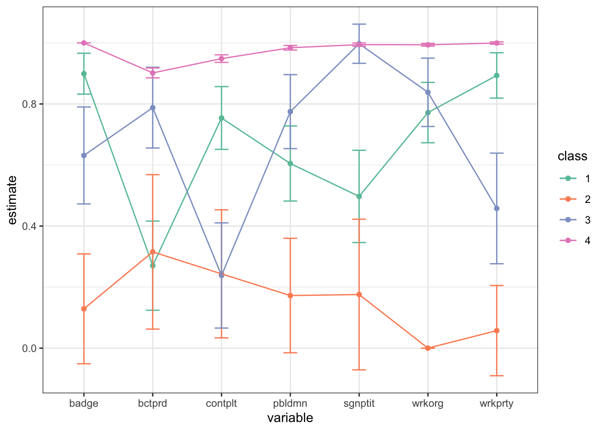
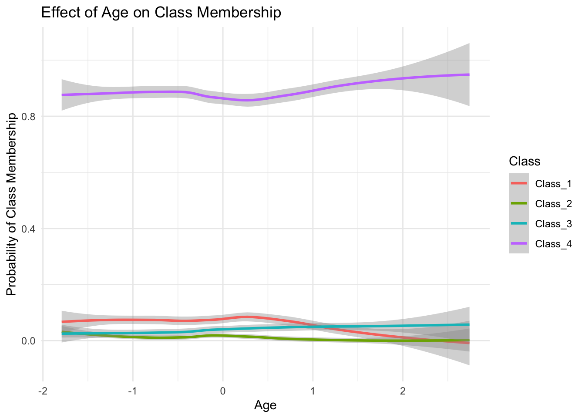
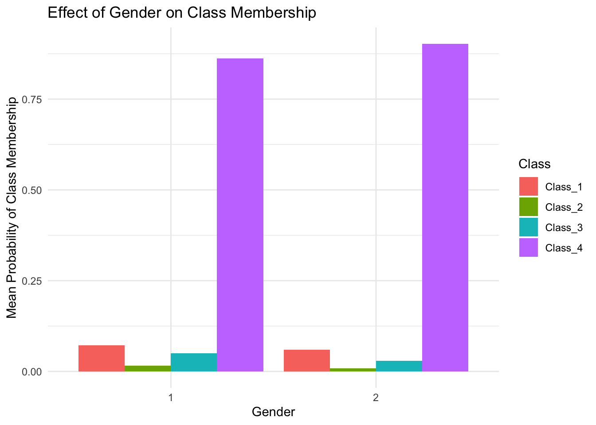

set.seed(202303)
library(tidyverse)
library(broom)
library(haven)
library(poLCA)
library(ggplot2)
ess_greece <- read_csv("https://daob.nl/files/lca/ess_greece.csv.gz")
ess_greece <- na.omit(ess_greece)
form_activism <- cbind(contplt, wrkprty, wrkorg,
badge, sgnptit, pbldmn, bctprd) ~ 1
fit <- poLCA(form_activism,
data = ess_greece,
nclass = 4,
nrep = 20, verbose = FALSE)Lab part 2: Political activisim in Greece
Classification quality
In Lab 2, we continue with the model we created in Lab 1. You can continue in your previous script with the four class model, or run the following code:
Question 1
Create a data frame with the posterior class memberships and predicted class has the actual classification (predclass is the “modal assignment”)
Use the four-class model as the selected model
posteriors <- data.frame(post = fit$posterior,
predclass = fit$predclass)
classification_table <- posteriors %>%
group_by(predclass) %>%
summarize(across(starts_with("post."), ~ sum(.x)))
classification_table <- classification_table[,-1] |> as.matrix()
# Adopt the notation X=true latent class, W=assigned class
colnames(classification_table) <- paste0("X=", 1:4)
rownames(classification_table) <- paste0("W=", 1:4)
classification_table %>% round(1) X=1 X=2 X=3 X=4
W=1 60.1 1.4 8.6 4.0
W=2 0.2 19.8 1.0 0.0
W=3 3.0 1.1 87.4 7.5
W=4 11.1 0.0 34.8 1822.0With column proportions:
classification_table |>
prop.table(2) |>
round(3) X=1 X=2 X=3 X=4
W=1 0.808 0.062 0.065 0.002
W=2 0.003 0.887 0.008 0.000
W=3 0.040 0.051 0.663 0.004
W=4 0.149 0.000 0.264 0.994Question 2
Calculate classification errors from classification table.
Question 3
And now calculate the Entropy \(R^2\).
Including covariates
Question 4
Now fit the four-class model, but include covariates that predict the class membership. Class membership is predicted by gender and a quadratic age effect.
We also use the results from the model without covariates as starting values for the solution.
This is where the analyzed data would have been different if we had not already deleted all cases with at least one missing value above using na.omit. In practice this may lead to trouble, especially when there are many variables.
form_activism <- cbind(contplt, wrkprty, wrkorg,
badge, sgnptit, pbldmn, bctprd) ~
gndr + agea + I(agea^2)
ess_greece_poly <- ess_greece %>%
mutate(agea = scale(agea))
fit_covariates <-
poLCA(form_activism,
data = ess_greece_poly, nclass = 4,
probs.start = fit$probs,
verbose = FALSE, nrep = 50, maxiter = 3e3)Question 5
Confirm that the results now include a multinomial regression coefficients in a model predicting class membership.
fit_covariatesConditional item response (column) probabilities,
by outcome variable, for each class (row)
$contplt
Pr(1) Pr(2)
class 1: 0.2460 0.7540
class 2: 0.7566 0.2434
class 3: 0.7619 0.2381
class 4: 0.0514 0.9486
$wrkprty
Pr(1) Pr(2)
class 1: 0.1066 0.8934
class 2: 0.9426 0.0574
class 3: 0.5423 0.4577
class 4: 0.0004 0.9996
$wrkorg
Pr(1) Pr(2)
class 1: 0.2283 0.7717
class 2: 1.0000 0.0000
class 3: 0.1618 0.8382
class 4: 0.0062 0.9938
$badge
Pr(1) Pr(2)
class 1: 0.1008 0.8992
class 2: 0.8711 0.1289
class 3: 0.3687 0.6313
class 4: 0.0000 1.0000
$sgnptit
Pr(1) Pr(2)
class 1: 0.5029 0.4971
class 2: 0.8243 0.1757
class 3: 0.0027 0.9973
class 4: 0.0056 0.9944
$pbldmn
Pr(1) Pr(2)
class 1: 0.3951 0.6049
class 2: 0.8277 0.1723
class 3: 0.2251 0.7749
class 4: 0.0158 0.9842
$bctprd
Pr(1) Pr(2)
class 1: 0.7298 0.2702
class 2: 0.6846 0.3154
class 3: 0.2121 0.7879
class 4: 0.0983 0.9017
Estimated class population shares
0.0653 0.0117 0.0387 0.8843
Predicted class memberships (by modal posterior prob.)
0.049 0.0116 0.033 0.9064
=========================================================
Fit for 4 latent classes:
=========================================================
2 / 1
Coefficient Std. error t value Pr(>|t|)
(Intercept) -1.20234 0.88172 -1.364 0.176
gndr -0.45999 0.55026 -0.836 0.405
agea -0.40722 0.48011 -0.848 0.399
I(agea^2) -0.00799 0.42691 -0.019 0.985
=========================================================
3 / 1
Coefficient Std. error t value Pr(>|t|)
(Intercept) -0.24986 0.68744 -0.363 0.717
gndr -0.30756 0.40474 -0.760 0.449
agea 0.51671 0.23895 2.162 0.033
I(agea^2) 0.22320 0.19886 1.122 0.265
=========================================================
4 / 1
Coefficient Std. error t value Pr(>|t|)
(Intercept) 1.97587 0.40630 4.863 0.000
gndr 0.26953 0.24745 1.089 0.279
agea 0.27742 0.14518 1.911 0.059
I(agea^2) 0.29597 0.13349 2.217 0.029
=========================================================
number of observations: 2062
number of estimated parameters: 40
residual degrees of freedom: 87
maximum log-likelihood: -2764.565
AIC(4): 5609.129
BIC(4): 5834.387
X^2(4): 126.1331 (Chi-square goodness of fit)
ALERT: estimation algorithm automatically restarted with new initial values
Question 6
Check if the solution has changed now that covariates are included.
tidy(fit_covariates) %>%
filter(outcome == 2) %>%
mutate(class = as.factor(class)) %>%
ggplot(aes(variable, estimate, group = class, color = class)) +
geom_point() + geom_line() +
geom_errorbar(aes(ymin = estimate - 2*std.error,
ymax = estimate + 2*std.error), width = 0.2) +
theme_bw() + scale_color_brewer(palette = "Set2")
Question 7
Plot the results of the multinomial model
library(dplyr)
library(ggplot2)
library(tidyr)
# Extract posterior probabilities of each class
posterior_df <- as.data.frame(fit_covariates$posterior)
# Add covariates to the dataset
posterior_df <- ess_greece_poly %>%
dplyr::select(gndr, agea) %>%
bind_cols(posterior_df)
# Rename class probability columns
colnames(posterior_df)[3:ncol(posterior_df)] <- paste0("Class_", 1:4)
# Convert gender to factor for plotting
posterior_df$gndr <- as.factor(posterior_df$gndr)# Reshape data to long format for ggplot
posterior_long <- posterior_df %>%
pivot_longer(cols = starts_with("Class_"),
names_to = "Class", values_to = "Probability")
# Plot probability of class membership as a function of age
ggplot(posterior_long, aes(x = agea, y = Probability, color = Class)) +
geom_smooth(method = "loess", se = TRUE) +
labs(title = "Effect of Age on Class Membership",
x = "Age", y = "Probability of Class Membership") +
theme_minimal()`geom_smooth()` using formula = 'y ~ x'
ggplot(posterior_long, aes(x = gndr, y = Probability, fill = Class)) +
geom_bar(stat = "summary", fun = "mean", position = "dodge") +
labs(title = "Effect of Gender on Class Membership",
x = "Gender", y = "Mean Probability of Class Membership") +
theme_minimal()